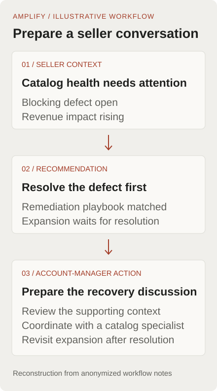

Amazon · Senior PM · Current role since May 2025
Amplify.
Less preparation.
A clearer next action.
Account managers had seller data, dashboards, and playbooks. They still had to piece together what mattered before each call. I built a seller-insights product around that work.
- Customer
- NA/EU marketplace account managers
- Rollout reach
- Approximately 1,600 account managers
- Measured preparation time
- 45 → 5 minutes
Study of 10 account managers
I changed the brief from reporting to preparation.
The original request was a dashboard aggregating seller signals. Account managers already had dashboards, tribal knowledge, and ad hoc requests to business teams. They needed help deciding what to do next.
I chose a preparation workflow: bring seller context, recommended actions, and supporting evidence together. A reporting-only product would still have left the account manager doing the synthesis.
Another reporting surface as the whole solution. I kept the focus on preparing for seller conversations and prioritizing actions.
I built it, then worked with regional teams to launch.
I identified the problem, conceptualized the solution, wrote the PR-FAQ, advocated for it with leadership, and built the tool using AI-assisted coding. I partnered with North American data engineering on the pipelines and launched in North America.
Amplify became the primary seller-insights tool for account managers across the North American and European third-party marketplaces. European engineering adapted it for Europe.
I failed to revalidate a new sponsor’s commitment.
Our anchor customer changed leaders shortly before the PR-FAQ review. I did not confirm the new leader’s decision criteria and support. The customer withdrew during the review.
I formed a cross-functional working group, sent weekly updates on decisions and risks, and expanded the pilot to two other account-management teams. Those pilots also revealed campaign workflow gaps, which informed a campaign-performance module. The original customer later returned and asked us to launch.
Adoption slipped three months. I now brief material stakeholders before a formal review, especially after a leadership change, and confirm their concerns and commitment.
Separate the time study from the rollout.
A before-and-after time-and-motion study involving 10 account managers measured average seller-call preparation falling from 45 to 5 minutes, an 89% reduction. This was a small study, not a large randomized trial or a measurement of all 1,600 account managers.
The broader rollout established Amplify as the primary seller-insights tool for NA/EU account managers.
Sub-500ms P95 latency. Monthly production inference spend fell from $3,000 to $250, a 92% reduction at the same workload, while recommendation and email quality stayed above release thresholds.
Make recommendations fast enough to use and clear enough to question.
I used deterministic rules for eligibility, permissions, freshness, and routing. Models synthesized and explained the evidence. Pre-computation, task-specific models, and batch processing reduced the need for live generation on every request.
These choices supported the account manager’s workflow and the product’s operating cost. They were implementation decisions in service of a useful recommendation.
Technical detail: how a recommendation reaches the account manager
The workflow combines structured seller signals with policy and playbook context. The service checks permissions, seller state, eligibility, and freshness before retrieval and selective generation. The interface presents the recommended action, its evidence, and a feedback path.
From a seller signal to a conversation.
An account manager preparing for a seller call needs to know what deserves attention, why it matters, and who can help. This reconstructed catalog-recovery example shows how those pieces fit together.

What changed for the account manager
Instead of piecing together signals and searching for the relevant playbook, the account manager gets a recommended action with supporting context. They can review the evidence and prepare the seller conversation.
About this illustration
This is an explanatory diagram, not a screenshot of Amazon’s internal product. The catalog-recovery scenario comes from the anonymized workflow notes. The source manifest records their provenance.